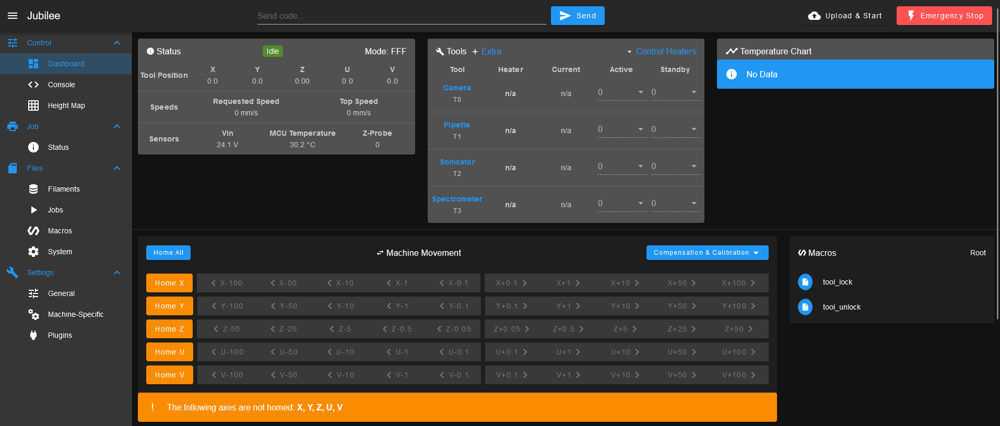

End-to-end setup for a new lab
This page provides a general overview of the Jubilee ecosystem with an eye towards getting a new contributor up to speed as a developer of Jubilee for science. This guide was developed as a resource to aid in the onboarding of new students in the Pozzo research group, but can serve as a useful reference for anyone new to Jubilee. If you are using a Jubilee as a tool in your research in collaboration with an established Jubilee user, following this guide verbatim may be unnecessarily involved. However if you are starting from scratch with Jubilee, you will need to follow all the steps here to get a functional experiment up and running.
What is Jubilee?
To lift directly from the Jubilee wiki, “Jubilee is an extensible multi-tool motion platform capable of running G-code for low force automation applications.”. Jubilee is originally developed and configured as a tool-changing 3D printer. Tool changing 3D printers use multiple hot-swappable extruder heads to allow them to print with multiple colors or materials. Jubilee is a great platform for experimental automation because the tool changing capability makes it possible to run multi-step experimental workflows on a single platform without moving samples manually. The open, extensible nature of the platform also makes it reasonably straightforward to develop new tools or capabilities. However, because Jubilee is an open-source system, the user is responsible for many aspects of building and running the system. This lends Jubilee a steep learning curve compared to other automation platforms. This guide provides a pathway to flatten that learning curve.
Where to find help?
Because Jubilee is many things to many people, information on the platform is spread across several locations.
The Jubilee wiki page https://jubilee3d.com/index.php?title=Main_Page is the official website of the Jubilee project. You will find instructions for building the core motion platform and configuring it as a 3D printer here.
Jubilee as a 3D printer has a large and active community. The Jubilee discord is the best spot to interact with this community. (Open a github issue on science_jubilee if this link is broken)
The people behind science-jubilee host an Open Source Lab Automation discord server. Join at https://discord.gg/ubxU2rMJwN.
Jubilee uses a commercial motion control board called Duet as its brains. For software, configuration, or wiring issues, start at the Duet documentation.
Prerequisites
This guide assumes you have a few things:
Hardware:
A Jubilee motion platform, either assembled or still in the box (in the box is better!). You can purchase a Jubilee kit from filastruder or assemble the requisite parts from the bill of materials. If it is an option, buying the Filastruder kit is likely to be the most cost effective option, doubly so if you value your time in any way. These directions assume you are running a Duet 3 mini ethernet main board and a Duet3 3HC expansion board, but other options will work too.
Hardware to run the color mixing demo. This includes an Opentrons pipette tool or other liquid handling tool as well as a downward-facing camera such as the webcamera tool.
An ethernet cable and means to plug it into your computer. Modern laptops will probably require and adapter.
Software:
A computer with python installed, preferably via a conda environment
A science-jubilee duet configuration fileset.
Tools:
A set of precision screwdrivers with hex and torx bits. We like the Mako driver kit from iFixit.
A set of metric hex L keys
#2 phillips screwdriver
Flush-cut clippers for zip ties
Most tool builds will require parts to be 3D printed on a filament printer. You will not need this for the motion platform build if you buy the full kit.
Most tool builds will also require making electrical connections through soldering and crimping. You will not need to do this for the motion platform build if you buy the full kit.
0. Things to be aware of if you are new to motion platforms
Most of the hardware involved in Jubilee is pretty resilient and can handle a few mistakes in assembly and operation. However, there are some guidelines to follow to keep you and your Jubilee safe:
Mind the mains AC terminals on the power supply (and the 24V as well). The Jubilee power supply requires you to make connections to your mains AC power at either 120 or 240V. This is dangerous and could kill you. Don’t touch or modify power connections with the machine plugged in. There are printable terminal guard designs for the power supply we reccomend printing and installing, such as this one.
Don’t plug/unplug stepper motor drivers with the Duet board powered on. This will likely damage your stepper drivers and fry your $$ board. Its good practice not to plug/unplug anything else with the board on, but definetley don’t do it for stepper connectors.
Mind the belts and moving parts while the machine is in motion.
1. Assemble and configure the motion platform
Estimated time: 8 hours - 5 working days
Hardware assembly
Find more details on building a science jubilee in our docs here:
This is a time consuming process, but it is well worth investing this time as this gets you familiar with the platform. Once you build it, you can understand issues and fix them. New developers in our research group are handed a partially disassembled Jubilee as their first task during the onboarding process. The build process is well documented on the Jubilee3D wiki. Most of the content for science-jubilee assumes you have a working motion platform and doesn’t cover this step.
Wiring
We have a wiring quickstart diagram to wire the boards for our ‘default’ lab automation configuration. Ignore the connections for the pipette and camera for now. This wiring setup is based off of the duet3 mini wiring diagram from the Jubilee wiki, but may differ slightly.
{kind=link}
Board provisioning and initial connection
You will need to set up configuration files on the duet board to connect to it. First, you will need a bootable microSD card for your Duet. It probably came with a pre-configured SD card in the box. If not, follow the directions at https://docs.duet3d.com/User_manual/RepRapFirmware/SD_card to set one up from scratch.
Setting up g-code configuration files for Jubilee takes a fair amount of sorcery and dark magic. If possible, We recommend starting from our functional configuration file and modifying it to fit your needs. This config hasn’t been shared yet. In the meantime DM one of us to get it.
#TODO Put these in a smart place and link here
You will also need to set up your computer’s network settings to access Jubilee over a direct ethernet connection. There is a great write-up of this process on the Jubilee wiki.
If you have done everything correctly, now you are ready to connect to the machine and home it for the first time! Open a web browser and enter the ip address you assigned Jubilee. In our config this is 192.168.1.2. You should be connected to the Duet Web Control interface. This is a GUI interface for controlling the Duet boards on Jubilee. It is useful for editing configuration files on the Duet board, making manual machine movements, debugging, and incident recovery.

Screenshot of duet web control dashboard.
Now, you’re ready to home the machine for the first time! Homing is a process the motion platform goes through to figure out where it is in space and make sure everything works. During the homing procedure, the machine will move each axis to it’s 0 position (see Jubilee coordinate system primer). You will need to home the machine every time you power it on. Before you proceed, make sure the bed is clear of everything, including the lab automation deck plate. To home the machine from the Duet Web Control interface, click the blue ‘home all’ button. The first time you home a new machine, expect something to go wrong. Watch the process carefully and keep a finger over the power switch if something goes wrong. There should be no crashing, shuddering, or grinding during this process.
First-line troubleshooting
The duet board does not power on when you turn on the power switch, and you checked that the outlet you are using works
There are some fuses that go into the power socket on the machine, where you plug the cable in
Double check your wiring connections from the power supply to the duet boards
An axis does not move during homing
Check that the stepper motor is wired correctly, ie that the 4 wires are in the correct order at both terminals (order will depend on your stepper motor and the driver on the duet)
Check that the axis is configured correctly in the duet config. Is the connector plugged in where the config says it is supposed to be?
An axis moves while homing, but the motors do not stop when it hits it’s endstop limit switch/ ‘0’ point resulting in a ‘crash’ and grinding noise.
Check that your limit switch is functioning:
Make sure it is plugged in to the I/O port that the config file is expecting for that axis
If the port is correct, check that limit switch is funtional with a multimeter on the continuity setting. The switch/circuit should be closed when the switch is not pressed and open when the switch is pressed.
The Z-axis goes through it’s probing process, then makes a correction that worsens the bed leveling
Check that the Z left, right, and back motor connections are not mixed up between the config.g file and the physical connections
2. Build and install the tools you will be using
For this tutorial, we need an OT2 Pipette Tool and Webcamera tool.
Tool build documentation is a little scattered currently, so you may have to look in various places to get the information you need.
Building the pipette
Follow the OT2 Pipette tool documentation for the pipette build guide.
Building the camera tool
This tutorial uses the Webcamera tool. This is a raspberry pi camera tool that is set up to serve images through an HTTP endpoint, which allows you to run the main logic of your experiment on a system that is not a raspberry pi. Follow the documentation to build the tool.
Setting tool parking post positions and offsets
After you have completed your tool assembly, you will need to set parking post positions and tool offsets. Parking post positions tell the Jubilee system where the parking posts for the tool are so it can be reliably picked up and parked. Tool offsets calibrate the positioning of the ‘active point’ of the tool. This allows each tool to move to the same place on the deck when we tell it to go to the same XYZ position as other tools. For the camera, the ‘active point’ is the center of the field of view, and for the OT2 Pipette tool it is the pipette tip.
Follow the parking post position procedure to set the tool parking post positions for each tool you are using.
Warning
Make sure to drop the bed z height so that the tool will clear the bed when picked up. This will not happen automatically becuase you have not set the tool offsets yet!
There are directions on the Jubilee wiki for setting tool offsets. They provide a good overview of the procedure, but assume you are using a USB microscope to align the tools. I like to use the following, simpler procedure:
Place a piece of masking/label tape on the deck and draw an X on it with a fine point sharpie or other fine pen
Position the z probe limit switch of the tool carriage over the “X” using the duet web interface jog controls
Write down the XYZ coordinates of the X
For each tool:
Pick up the tool
Position it so that the ‘active point’ is located over the X as precisely as you can
Write down the position of the tool
Subtract the coordinates you wrote down for the z probe switch above from the position of the tool. This is your tool offset
Edit the tool offset in /sys/toffsets.g
Load the new tool offset with the gcode command
M98 P'toffsets.g. The current tool position should update to match the z-probe position you wrote down
3. Install and calibrate the lab automation deck plate
The lab automation deck plate allows you to position labware on the Jubilee deck. It consists of a laser-cut delrin (plastic) mask that mounts to the Jubilee aluminum bed plate using either 3D printed clasps or direct screws, depending on the version. Once the lab automation deck plate is physically mounted, you will need to change the machine configuration files so that the z-axis homing probe pattern accounts for the openings in the delrin, and perform a calibration procedure to use the deck in science-jubilee.
Build the deck plate. Directions can be found here
Verify that you followed the directions to update the machine config files in the docs linked in step 1.
Install the
decksplugin (pip install -e .from a clone). Its deck definition JSON contains the calibrated slot offsets — see Packaging a deck plugin for the file format and how to re-calibrate for your specific machine.
4. Run your first experiment script
At this point you have a wired-up Jubilee, at least one calibrated tool, and a deck plugin installed. Time to write Python.
Your first session walks through connecting, homing, picking up a tool, and moving to a well — first in mock mode, then on hardware.
Writing an experiment script covers the two navigation styles (
FreeNavigatorvsDeckNavigator) and how to structure a real experiment.Every environment variable, explained is the reference for what your
.env.hardwareneeds.Common errors and how to fix them covers the frequent gotchas.
Once your first script runs end-to-end on hardware, you’re ready to build your own experiment on top of the same patterns.